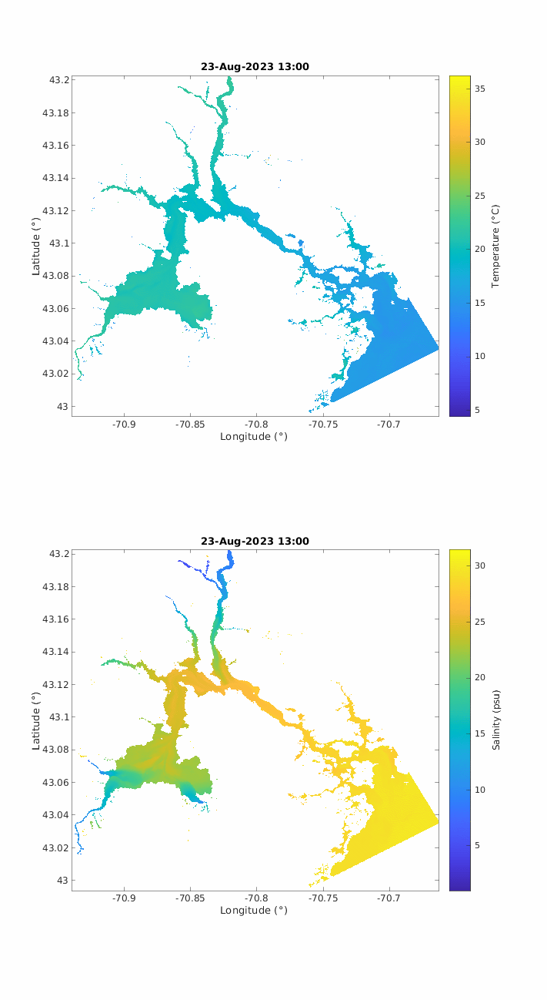

This system is based upon work supported by the U.S. Department of Energy's Office of Energy Efficiency and Renewable Energy (EERE) under the Water Power Technologies Office (WPTO) Award Number DE-EE0009450.
Computations were performed on Marvin, a Cray CS500 supercomputer at UNH supported by the NSF MRI program under grant AGS-1919310.
